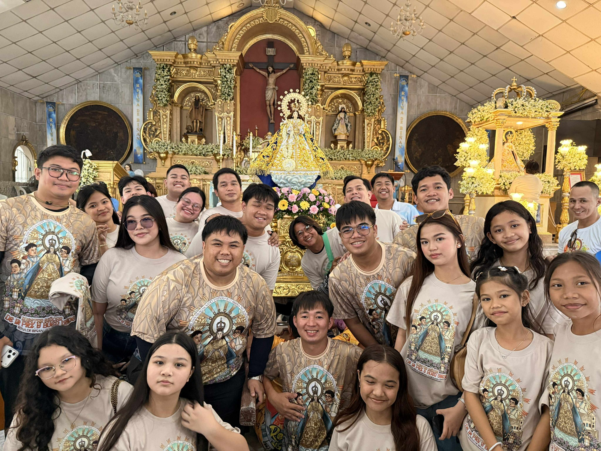

Galeriya ng Pananampalataya
Mga Banal na Sandali

Fiesta 2026
Himig para sa Langit

"Isang Tinig"
Para sa Ina ng Kapayapaan
Ang aming musika ay dala ang mensahe ng kapayapaan mula sa Birhen ng De La Paz.
"Bis orat qui cantat" - Ang umaawit ay nagdarasal ng dalawang ulit sa bawat tono.
Nagsimula ang lahat sa isang pangarap—ang pag-isahin ang mga kabataan ng Biñan sa pamamagitan ng musika. Sa ilalim ng gabay ng ating Ina, ang Nuestra Señora De La Paz y Buen Viaje, nabuo ang koro upang maging tinig ng pasasalamat.
Sa paglipas ng panahon, ang bawat rehearsal ay naging pundasyon ng samahan. Hindi lamang kami naging isang koro; naging isang pamilya kami na naglalakbay tungo sa mas malalim na pananampalataya at pagkakaibigan.
Ngayong 2026, patuloy ang Queen of Biñan sa pag-aalay ng himig na may dangal. Mula sa mga kapistahan hanggang sa mga banal na pagdiriwang, ang aming tinig ay mananatiling tapat sa misyong maglingkod.
"Ang bawat nota ay isang hakbang, ang bawat kanta ay isang paglalakbay."

Kami ay laging bukas para sa mga bagong tinig na nagnanais maglingkod sa Mahal na Birhen.
MESSAGE US ON FACEBOOK